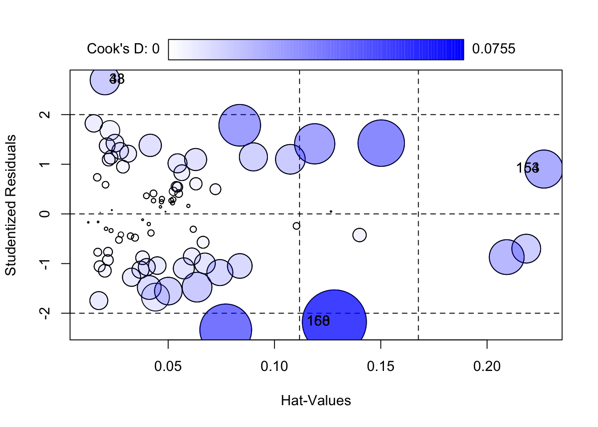

Warning: package 'car' was built under R version 4.3.3Project1
Summary:
The fact that the R-squared value is 0.9516 indicates that this model explains most of the price volatility of the Cellphone well. The adjusted R-squared is high at 0.949, indicating that the model explains the data well even considering the number of independent variables. The F-statistics confirm that the model is statistically significant and provide strong evidence that the selected independent variables have a significant influence on the price of the Cellphone.
Looking at the contribution of each variable, the resolution was found to have a negative effect on the price, while pixel density, number of CPU cores, CPU frequency, internal memory, RAM, and battery capacity seem to contribute to the increase of the price. Thickness was analyzed to have a negative effect on the price as well as the resolution.
Considering the overall model fit and flexibility of the assumption review results, it can be concluded that the model captures the key factors in pricing. This analysis will provide useful insights into future Cellphone pricing strategies.
Introduction:
Data set: Mobile price depends on various factors such as resolution, weight, Phone Pixel Density(ppi), RAM, battery and CPU core and frequency, internal memory, camera of cellphone, thickness. Dataset is numeric value. In this dataset, we want to estimate the price of mobile phones using the above features. I set up the Price of Cellphone as response ”Y”. Other things (weight, ppi, RAM, battery..) are predictors for predicting response Y beacuse technical characteristics were judged to be important for Cellphone price prediction, variables such as resolution, CPU core, and internal memory were selected. I set the hypothesis, H0: b1 = b2 = … = bp = 0, Ha: At least one b1 is not 0. I f H0 reject, we say this result indicated that at least one predictor contributes significantly to accounting for the variability of the response variable (cell phone price).Now we check table of summary about the data.
| Feature | Min | X1st.Qu. | Median | Mean | X3rd.Qu. | Max |
|---|---|---|---|---|---|---|
| Price | 614.0 | 1734.0 | 2258.00 | 2215.596273 | 2744.000 | 4361.0 |
| weight | 66.0 | 134.1 | 153.00 | 170.426087 | 170.000 | 753.0 |
| resoloution | 1.4 | 4.8 | 5.15 | 5.209938 | 5.500 | 12.2 |
| ppi | 121.0 | 233.0 | 294.00 | 335.055901 | 428.000 | 806.0 |
| cpu.core | 0.0 | 4.0 | 4.00 | 4.857143 | 8.000 | 8.0 |
| cpu.freq | 0.0 | 1.2 | 1.40 | 1.502832 | 1.875 | 2.7 |
| internal.mem | 0.0 | 8.0 | 16.00 | 24.501714 | 32.000 | 128.0 |
| ram | 0.0 | 1.0 | 2.00 | 2.204994 | 3.000 | 6.0 |
| RearCam | 0.0 | 5.0 | 12.00 | 10.378261 | 16.000 | 23.0 |
| Front_Cam | 0.0 | 0.0 | 5.00 | 4.503106 | 8.000 | 20.0 |
| battery | 800.0 | 2040.0 | 2800.00 | 2842.111801 | 3240.000 | 9500.0 |
| thickness | 5.1 | 7.6 | 8.40 | 8.921739 | 9.800 | 18.5 |
Finding the Final model:
Now, I set up the first multiple linear regression model.The first model is full model, including response(Price) and all predictors.
Call:
lm(formula = Price ~ ., data = st)
Residuals:
Min 1Q Median 3Q Max
-390.49 -115.61 7.34 122.08 463.01
Coefficients:
Estimate Std. Error t value Pr(>|t|)
(Intercept) 1739.98213 217.91728 7.985 3.51e-13 ***
weight -0.68753 0.68257 -1.007 0.315439
resoloution -67.40376 42.32976 -1.592 0.113426
ppi 1.05375 0.21771 4.840 3.21e-06 ***
cpu.core 55.18927 9.83031 5.614 9.38e-08 ***
cpu.freq 126.24294 44.85564 2.814 0.005547 **
internal.mem 5.30216 1.13663 4.665 6.82e-06 ***
ram 101.31322 25.52192 3.970 0.000112 ***
RearCam 2.75395 4.21033 0.654 0.514060
Front_Cam 5.80191 4.98359 1.164 0.246202
battery 0.13864 0.02999 4.624 8.12e-06 ***
thickness -74.97856 12.57601 -5.962 1.73e-08 ***
---
Signif. codes: 0 '***' 0.001 '**' 0.01 '*' 0.05 '.' 0.1 ' ' 1
Residual standard error: 172.8 on 149 degrees of freedom
Multiple R-squared: 0.9529, Adjusted R-squared: 0.9494
F-statistic: 274 on 11 and 149 DF, p-value: < 2.2e-16Now, I see the estimators, std.error and p-value. But some predictors of this first model has large p-value. So we should do model selection for finding our final model. I use the stepwise backward method to find fitting model. Now I get the reduced model.
\(Y(Price)\) = \(-101.9661\)\(\times\)\(x_1(resolution)\) + \(1.1304\)\(\times\)\(x_2(ppi)\)+ \(57.9263\)\(\times\)\(x_3(cpu.core)\)\(+144.4653\)\(\times\)\(x_4(cpu.freq)\) + \(5.2046\)\(\times\)\(x_5(internal.mem)\) +\(104.1362\)\(\times\)\(x_6(ram)\)+ \(7.4358\)\(\times\)\(x_7(Front_Cam)\) +\(0.1205\)\(\times\)\(x_8(battery)\)-\(81.5036\)\(\times\)\(x_9(thickness)\)
We check the p-value and estimates about predictors. Through the p-value, I can confirm that most predictors are statistically significant(p-value < 0.05). However, only Frot_Cam(P-value is 0.123064) is not statistically significant here, the p-value is over 0.05.
Call:
lm(formula = Price ~ resoloution + ppi + cpu.core + cpu.freq +
internal.mem + ram + Front_Cam + battery + thickness, data = st)
Residuals:
Min 1Q Median 3Q Max
-375.43 -122.63 -0.29 113.32 474.95
Coefficients:
Estimate Std. Error t value Pr(>|t|)
(Intercept) 1863.8122 171.2672 10.882 < 2e-16 ***
resoloution -101.9661 22.8849 -4.456 1.62e-05 ***
ppi 1.1304 0.1918 5.893 2.38e-08 ***
cpu.core 57.9263 9.5919 6.039 1.15e-08 ***
cpu.freq 144.4653 41.7281 3.462 0.000697 ***
internal.mem 5.2046 1.1109 4.685 6.20e-06 ***
ram 104.1362 25.1621 4.139 5.79e-05 ***
Front_Cam 7.4358 4.7951 1.551 0.123064
battery 0.1205 0.0253 4.761 4.47e-06 ***
thickness -81.5036 10.7637 -7.572 3.39e-12 ***
---
Signif. codes: 0 '***' 0.001 '**' 0.01 '*' 0.05 '.' 0.1 ' ' 1
Residual standard error: 172.7 on 151 degrees of freedom
Multiple R-squared: 0.9523, Adjusted R-squared: 0.9495
F-statistic: 335.2 on 9 and 151 DF, p-value: < 2.2e-16I know from the p-value of t-test that Front_cam is not statistically significant, so I check if it has multicollinearity. If it has multicollinearity, the p-value is not a reliable result, so you can leave the predictor as it is, but if it is not, I will remove the predictor because I can trust the result of the p-value of t-test. Whether it has multicollinearity will be confirmed through a VIF test, and if the value of the VIF has a value of 5 or more, it is judged to have multicollinearity.
resoloution ppi cpu.core cpu.freq internal.mem ram
6.409048 3.589976 2.949752 3.362114 5.496070 8.806853
Front_Cam battery thickness
2.326786 6.419613 2.989462 I don’t think the p-value for t-test is incorrectly formed because the VIF value of Front_cam does not exceed 5. Therefore, Front_cam has been confirmed to be not statistically significant, so it is removed from the final linear model. Finally, I find the final linear regression model.
\(Y(Price)\) = \(-101.9661\)\(\times\)\(x_1(resolution)\) + \(1.1304\)\(\times\)\(x_2(ppi)\)+ \(57.9263\)\(\times\)\(x_3(cpu.core)\)\(+144.4653\)\(\times\)\(x_4(cpu.freq)\) + \(5.2046\)\(\times\)\(x_5(internal.mem)\) +\(104.1362\)\(\times\)\(x_6(ram)\) +\(0.1205\)\(\times\)\(x_8(battery)\)-\(81.5036\)\(\times\)\(x_9(thickness)\)
Call:
lm(formula = Price ~ resoloution + ppi + cpu.core + cpu.freq +
internal.mem + ram + battery + thickness, data = st)
Residuals:
Min 1Q Median 3Q Max
-383.65 -134.31 7.76 126.88 453.68
Coefficients:
Estimate Std. Error t value Pr(>|t|)
(Intercept) 1874.24893 171.92389 10.902 < 2e-16 ***
resoloution -100.47709 22.97017 -4.374 2.25e-05 ***
ppi 1.11339 0.19238 5.787 3.96e-08 ***
cpu.core 63.93728 8.81421 7.254 1.93e-11 ***
cpu.freq 135.54582 41.52029 3.265 0.00135 **
internal.mem 5.40076 1.10877 4.871 2.76e-06 ***
ram 114.67902 24.33785 4.712 5.50e-06 ***
battery 0.11441 0.02511 4.556 1.06e-05 ***
thickness -82.14064 10.80541 -7.602 2.81e-12 ***
---
Signif. codes: 0 '***' 0.001 '**' 0.01 '*' 0.05 '.' 0.1 ' ' 1
Residual standard error: 173.4 on 152 degrees of freedom
Multiple R-squared: 0.9516, Adjusted R-squared: 0.949
F-statistic: 373.3 on 8 and 152 DF, p-value: < 2.2e-16Conclusion:
R-squared: 0.9516, which means the model can account for about 95.16% of the variationy of the data. The adjusted R-squared is 0.949, indicating that independent variables well describe the variation of Cellphone prices. F-statistics: 373.3 (p-value < 2.2e-16), indicating that the model as a whole is statistically significant, meaning that the set of independent variables significantly contributes to predicting the dependent variable, price.
Intercept: The base price is about 1874.25.
resolution: for every 1 unit increase in resolution, the price decreases by approximately 100.48(p < 0.05).
ppi: for every 1 unit increase in pixel density, the price increases by approximately 1.11(p < 0.05).
cpu.core: for every 1 unit increase in CPU cores, the price increases by approximately 63.94 (p < 0.05).
cpu.freq: For every 1 unit increase in CPU frequency, the price increases by approximately 135.55 (p < 0.05).
internal.mem: for every 1 unit increase in internal memory, the price increases by approximately 5.40 (p < 0.05).
ram: For every 1 unit increase in RAM, the price increases by approximately 114.68 (p < 0.05).
battery: for every 1 unit increase in battery capacity, the price increases by approximately 0.11 (p < 0.05).
thickness: for every 1 unit increase in thickness, the price decreases by approximately 82.14 (p < 0.05).
The model still maintains a high coefficient of determination after excluding the front camera variable and is good at predicting cellphone prices. In particular, the number of CPU cores, RAM capacity, and CPU frequency have been shown to have a significant impact on pricing. Overall, the analysis provides useful information for cellphone manufacturers to consider technical specifications that are important in pricing.
The hypothesis, H0: b1 = b2 = … = bp = 0, Ha: At least one b1 is not 0. This is mainly addressed by the F-test. The F- statistic and its corresponding p-value (< 2.2e-16) strongly reject H0, indicating that at least one predictor contributes significantly to accounting for the variability of the response variable (cell phone price).
Diagnostics model assumption for final model
Linearity:
To satisfy linearity, the mean of the residuals should be zero, and the variance should be constant, regardless of the value predicted. The graph(residuals vs fitted plot) above shows that the data has a red line meandering close to the horizontal line of zero. This is not perfect, but it satisfies some linearity.
Normality :
In Q-Q plot, the assumption of normality is used to verify that residuals follow a normal distribution. In the plots provided, most of the data points are arranged along the diagonal, but show some deviation from both ends. This indicates that the normality of residuals is not perfect, especially suggesting that there may be heavy tails or outliers.
Homoscedasticity:
It checks by looking at Standardized residuals vs X plot. For a residual to have equal variance, it must be patternlessly distributed around the mean zero. In the horizontal line of the standardized residual plot is close to zero, and the lot shows an upward trend where the variance of the residual seems to increase as the predicted value increases, but it is generally satisfactory.
outliers or (possible) influential points:
Residuals vs Leverage plot helps identify influential cases (outliers) that can significantly influence the model’s predictions. I am looking for points outside Cook’s distance line. There are several points in your plot that are outside of boundaries or close to boundaries. Some data points in this graph are highlighted (e.g. 38, 168, 158), which means that those data points have relatively higher values of Cook’s D than others, and thus have a greater impact on the regression model.

StudRes Hat CookD
33 2.6965593 0.02028308 0.01606393
48 2.6965593 0.02028308 0.01606393
153 0.9032993 0.22673103 0.02661506
154 0.9032993 0.22673103 0.02661506
158 -2.1755217 0.12818250 0.07546589
160 -2.1755217 0.12818250 0.07546589